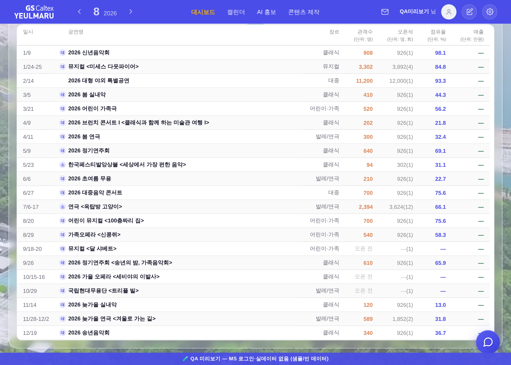

운영자 결정 대기 2건 — 눈으로 보는 설명
전부 무패치 실화면(?qa=admin 목데이터) · 실API·PII 미접촉. 코드는 아직 안 바꿨다 — 판단만 받으면 된다.
결정 ① 「2열 임계」 — 창이 조금만 넓어지면 매출 열이 사라진다
「2열」이 뭐냐 — 대시보드는 창이 넓으면 화면을 좌·우로 반씩 갈라 두 패널을 나란히 놓고(2열), 좁으면 위아래로 쌓는다(1열). 지금 갈리는 기준선은 가로 1200px이고, 1201px부터 2열이다.
문제 — 1201~1281px 구간에서는 반쪽 칸이 표보다 좁다. 그래서 맨 오른쪽 「매출」 열이 카드 밖으로 밀려 안 보이고, 가로 스크롤바도 없어서 잘렸다는 신호조차 없다. 공연명도 「202…」 세 글자로 뭉개진다.
아래 두 장은 같은 화면을 폭 1px 차이로 찍은 것이다 — 1201px(2열)과 1200px(1열).
문제 — 1201~1281px 구간에서는 반쪽 칸이 표보다 좁다. 그래서 맨 오른쪽 「매출」 열이 카드 밖으로 밀려 안 보이고, 가로 스크롤바도 없어서 잘렸다는 신호조차 없다. 공연명도 「202…」 세 글자로 뭉개진다.
아래 두 장은 같은 화면을 폭 1px 차이로 찍은 것이다 — 1201px(2열)과 1200px(1열).
① 폭 1201px — 2열 · 좌 「사업 결과 비교」 + 우 「판매현황 상세」 매출 열이 통째로 사라지고 공연명은 「202…」 (좌 패널이 빈 건 목데이터 탓 · 실화면에선 차트)
 2열 = 오른쪽 「반쪽 칸」. 이 안에 표를 다 못 넣는다
여기서 잘렸다 — 매출 열은 카드 밖
2열 = 오른쪽 「반쪽 칸」. 이 안에 표를 다 못 넣는다
여기서 잘렸다 — 매출 열은 카드 밖
② 폭 1200px — 1열 · 임계를 1281로 올리면 1201~1281px가 이 모습이 된다 전 열 정상 · 공연명 전문

1열 = 화면 전폭을 표가 다 쓴다 매출 열이 보인다| 폭 | 모드 | 표가 필요한 폭 | 칸이 주는 폭 | 넘침 | 공연명 칸 | 보이는 상태 |
|---|---|---|---|---|---|---|
| 1200 | 1열 | 1110 | 1110 | 0 | 628.5px | 전 열 정상 · 제목 전문 |
| 1201 | 2열 | 562.5 | 531 | 32px 부족 | 81px | 매출 열 소멸 · 머리글 「(단위: 만원」 글자 중간 절단 · 제목 「202…」 |
| 1240 | 2열 | 562.5 | 550 | 13px 부족 | 81px | 매출 열 잘림 |
| 1281 | 2열 | 570.5 | 571 | 0 | 89px | 넘침이 해소되는 지점 |
A안 · 그대로 둔다1201~1281px 창(노트북 일부 폭)에서 매출 열이 계속 안 보인다. 대신 대시보드 다른 면은 지금 그대로.
B안 · 기준선을 1200 → 1281로 올린다그 81px 띠가 위 ② 사진처럼 1열이 된다. 단 이 값은 대시보드 전체 공용이라 그 띠에서는 모든 면이 1열로 바뀐다.
왜 내가 못 정하나 —
_bizBookWide()는 이 표 전용이 아니라 대시보드 전 면의 2열 임계다. 「이 표를 살리려고 다른 면 배치를 바꾼다」는 값 선택이라 세션이 임의로 못 정한다.결정 ② 「오픈석 잉크」 — 이 열만 머리글과 같은 연한 회색이다
무슨 얘기냐 — 표에서 머리글(회색 안내 글자)과 본문(실제 값)은 진하기가 달라야 한다. 그런데 오픈석 값만 머리글과 똑같은 연한 회색(
아래는 같은 자리를 2배로 확대해 나란히 놓은 것이다 — 좌: 지금 / 우: 한 단계 진하게.
#888)이라, 데이터가 안내 문구처럼 읽힌다. 회차를 이 열로 합치면서 회차 값도 원래 쓰던 진한 회색에서 이 연한 회색으로 같이 내려왔다.아래는 같은 자리를 2배로 확대해 나란히 놓은 것이다 — 좌: 지금 / 우: 한 단계 진하게.
지금 —
--dim #888 · 대비 3.54:1 (AA 미달)
후보 —
--neutral-text #6B6B7B · 대비 5.23:1 (AA 통과)
| 안 | 잉크 | 흰 행 대비 | 줄무늬 행 | AA 4.5:1 | 부작용 |
|---|---|---|---|---|---|
| 지금 | var(--dim) #888 | 3.54:1 | 3.40:1 | 미달 | 없음(이 열이 원래 쓰던 잉크) |
| 후보 | var(--neutral-text) #6B6B7B | 5.23:1 | 5.01:1 | 통과 | 일시·장르와 같은 급이 된다 = 표 안 회색 2종 → 1종 |
A안 · 그대로 둔다오픈석은 「참고 값」이라는 신호를 유지. 대신 머리글과 같은 진하기 · AA 미달 유지.
B안 · 한 단계 진하게(
--neutral-text)본문이 머리글보다 진해져 위계가 정상이 되고 AA 통과. 대신 오픈석이 일시·장르와 같은 무게가 된다.참고 — 머리글·단위줄도
--dim 3.40:1이라 같이 미달이다. 본문만 올리면 「머리글보다 본문이 진하다」가 되어 위계는 오히려 정상이 된다. 머리글까지 손대는 건 별건(기틀 §6 부채 등재).참고 · 폭 1281px — 2열이어도 넘침이 막 해소되는 지점
B안의 임계값 1281은 여기서 나왔다 — 이 폭부터는 2열 반쪽 칸에 표가 딱 들어간다(표 부분만 촬영).
1281px · 2열 · 넘침 0